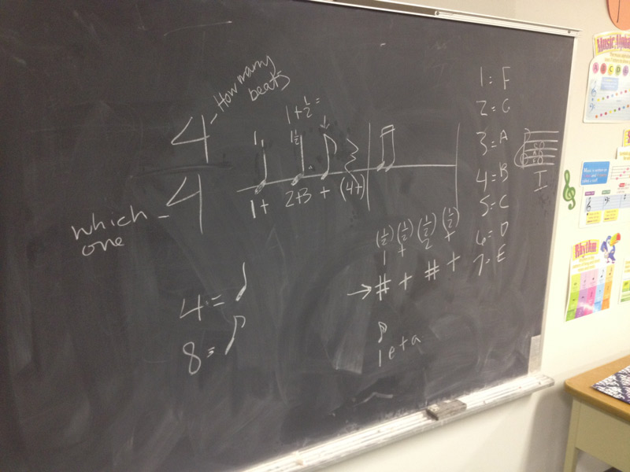
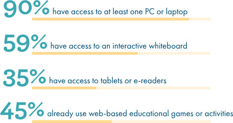
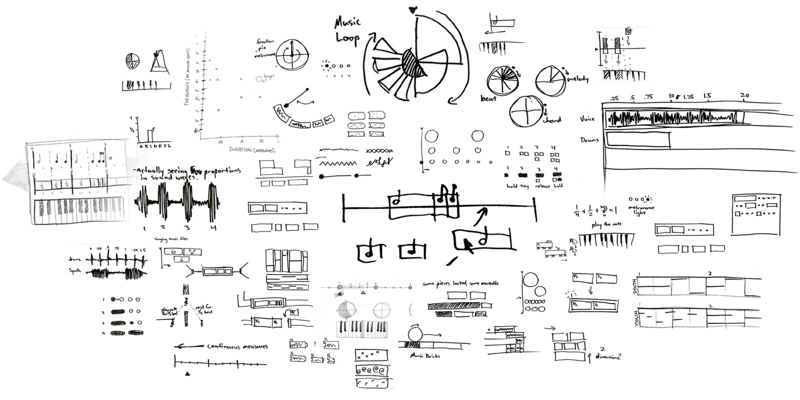
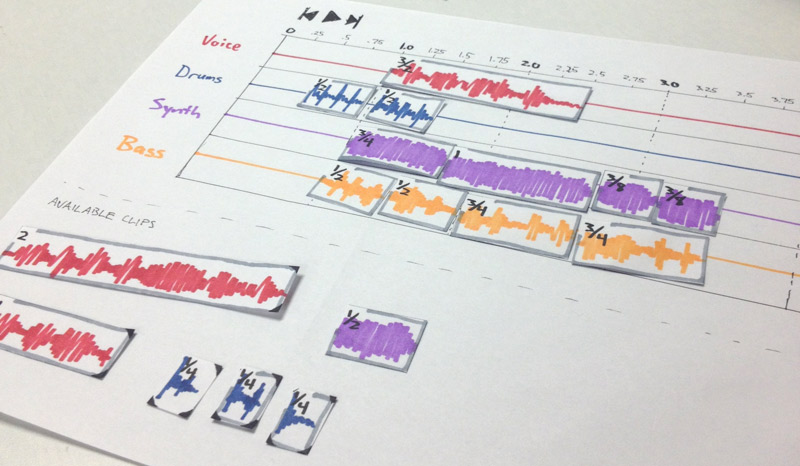
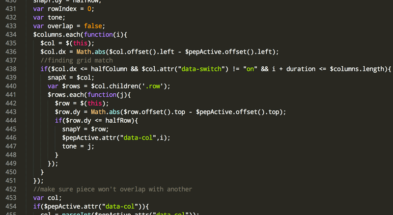
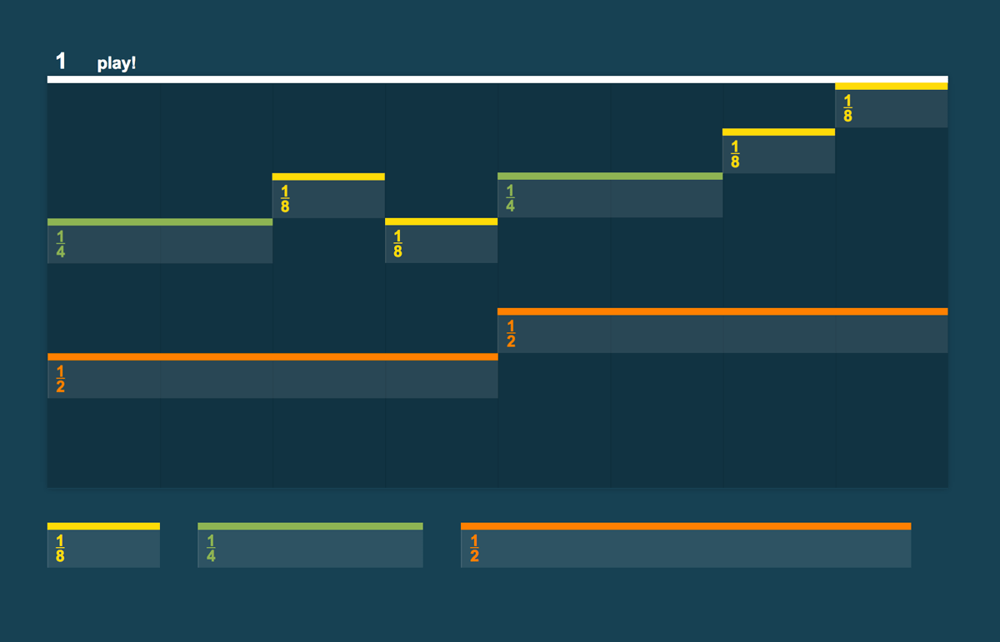
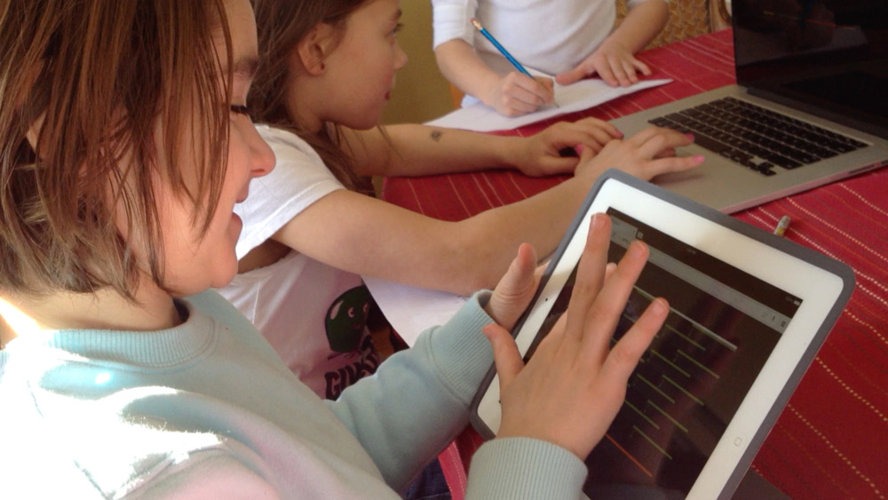
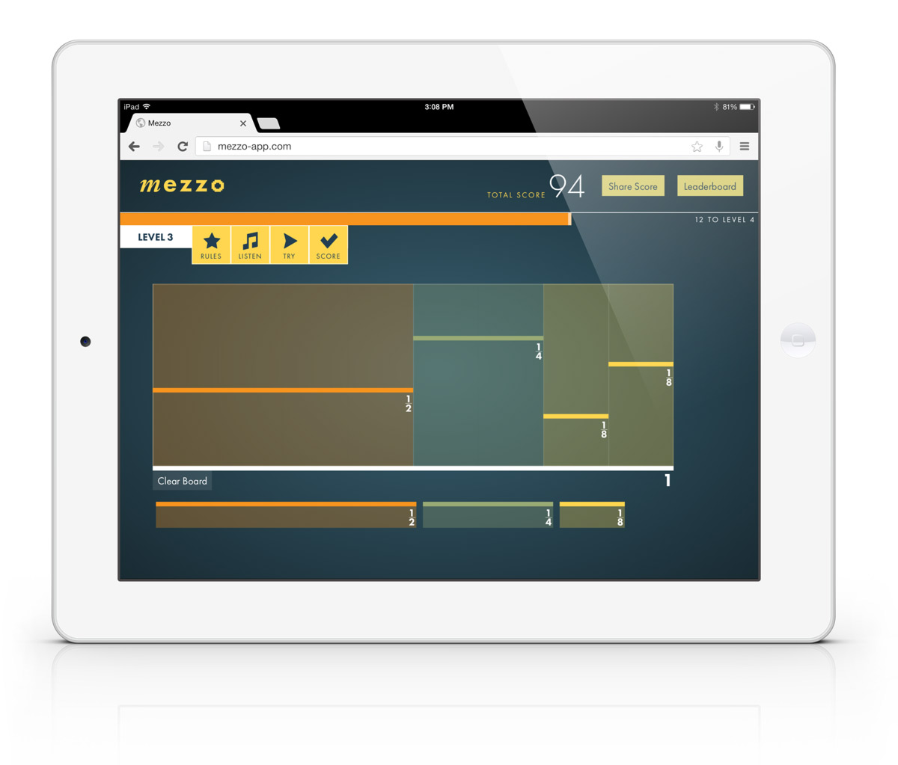

All Projects
Mezzo: Music + Math
Prototyping a new way to teach fractions to elementary school students through a musical, web-based game.
Note: this project is still in-progress, currently on hiatus while I catch up on my JS skills and find full-time employment in New York.
"How can design improve American education?" My BFA design thesis started with that question and ended with a working product prototype. Here's how I got there.
1. Constrain the scope of the project
Designers can't directly change the complex problems inherent in education—I would get lost if I tried to imagine a radical change within a context to which I was a newcomer. Finding a concrete, incremental way to empower a teacher would be much more manageable.
 If teachers often have to hammer screws, my role is to provide a screwdriver before critiquing the concept of threaded nails. (I'm looking at you, Common Core )
If teachers often have to hammer screws, my role is to provide a screwdriver before critiquing the concept of threaded nails. (I'm looking at you, Common Core )
Math had always been my strong suit in school, so I began my research by conducting interviews with math teachers and observing their classroom environments to locate the gaps between their existing and ideal toolsets. I also spoke with education product design professionals on a visit to NYC to learn from their experience and process.
2. Stem + Art = STEAM
I found an exciting trend within the STEAM movement, which aims to facilitate organic discovery of STEM concepts through creative exploration and artistic activities.

However, demands of resources, extra planning time, variable learning outcomes, and knowledge in creative disciplines make STEAM lesson plans difficult for a typical math teacher to build. By providing a ready-to-use creative activity with clear Common Core objectives and few resource requirements, I could help bring teachers one step closer to a STEAM-integrated curriculum.
3. Narrowing down the subject area
Every level of math could have benefited from STEAM, but I wanted to focus on the third grade level for two reasons:
- Potential impact—third grade math is the critical divergent point where kids who succeed usually continue doing so, and where kids who fail usually never recover.
- Practicality—I had many friends and contacts who happened to be working in elementary school education, so operating at this level would require much less overhead.
4. Music & Fractions: a perfect* match
One of the most important math concepts at this level is fractions. The best example I could find of STEAM benefits to fractions used music, an approach which strongly appealed to my own creative interests.
Despite the opportunity here, though, unfamiliar music notation and lack of sufficient vocabulary were major obstacles to illustrating specific connections between music and math.
 A third-grade music teacher describes to me the abstract concepts and symbols that her third graders struggle to grasp even with daily rehearsal.The challenge from here on out was to create an activity that would allow 9-year-olds to manipulate music without requiring abstract musical vocabulary or notation.
5. Conserving resources with a web-based product
It was plainly evident from the context and my skillset that a digital solution was the best route. Over the past few years, digital materials have been introducted to classrooms at a breakneck pace. Of all American classrooms...
2013 data from PBS LearningMedia.
A web-based solution would not only be accessible to a large majority of classrooms, but it would require zero resources beyond the tools already at their disposal. These digital tools vary dramatically between individual schools, so keeping my product in the browser was the most universally reliable option.
6. Interface Concepting
What does music look like without standard notation? I explored various ways of communicating the proportionality of rhythm.
The best interface concepts connected the dots between existing music sequencing interfaces and typical fraction manipulatives.
7. Prototyping
I couldn't start building anything without validation, so I put my sketches and an interface prototype in front of teachers for feedback.
The response was overwhelmingly positive from the teachers, who were extremely excited by the idea and wanted to show it to their students. However, the concept was lost on the kids when they only had paper to play with. I realized that the only way to test with young students would be to have a prototype that made sound by itself, so I built a simple Javascript synthesizer with the Web Audio API and hooked it up to grid of drag-and-drop fraction blocks.
  You can play with the prototype here if you'd like.8. Testing
It was past the time of the school year that this could be used in an actual classroom, so I recruited the children of family friends to run my own mini-music-fraction class. Pretty much all efforts were failing with them until I had them play a game where they had to visually recreate a simple melody just by listening to it.
They were totally into it, and I got to witness the "eureka" moment where one of the kids quite audibly realized why a half note lasts longer than an eighth note. Mission accomplished.
I refocused my effort on finding ways to guide kids to that discovery point. Developing a game was the most logical way to go about that.
9. Polishing the prototype for demonstration
I would have liked to experiment with the project much more before pushing it forward, but academic reality forced me to develop a more finished-looking product for my BFA reviews. I modified the prototype interface to work as a browser-based game and created an identity to go with it. The app is optimized for a medium-sized screen or tablet. You can access and play with it at mezzo-app.com.
10. Snite Museum Presentation
As part of the university's BFA review requirements, I presented my research and resulting design work at an exhibition in the Snite Museum of Art in South Bend, IN.
What's next?
- Design: I still have a ton to learn about how my product would be practically integrated into a teacher's lesson plan. I need a few willing teachers to try using this next school year when they're teaching fraction lessons for the very first time.
- Development: Flexible design requires flexible code. What I have right now is inefficient, rigid code that's tightly married to jQuery. Restructuring the code that supports the drag-and-drop interface will go a long way towards speeding up the iteration process.
Feel free to reach out if you would like to contribute to this project in any way.